This guide walks through every feature built so far, with a screenshot of each screen, so you can find your way around before an interview rather than during one.
Your starting point
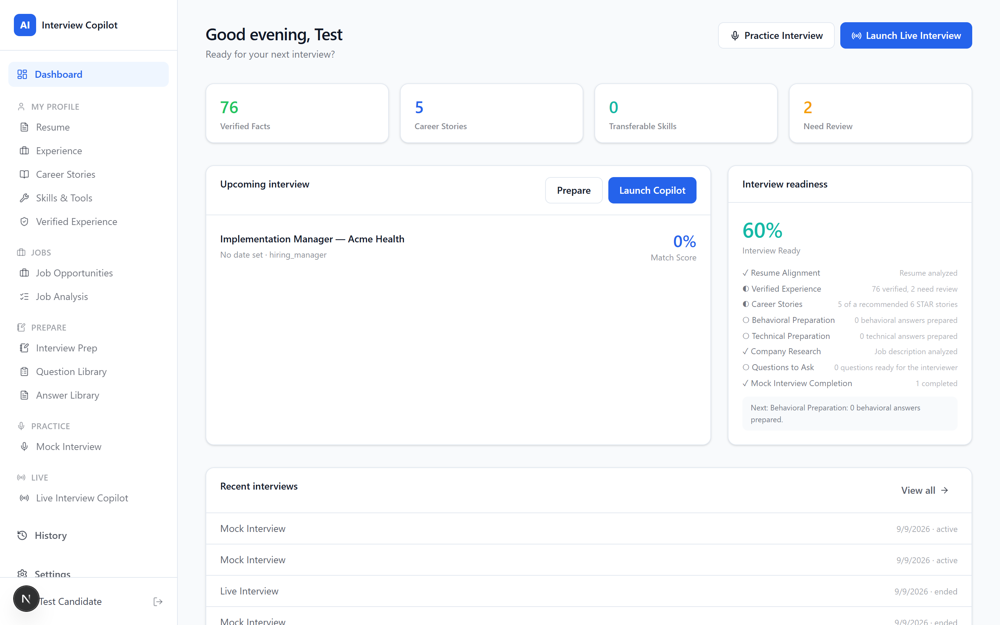
Everything opens here. The top row shows how ready you are: verified facts pulled from your resume, career stories on file, transferable skills, and anything still needing your confirmation. Upcoming interviews appear as cards with a match score and two buttons - Prepare, or Launch Copilot if the interview is happening now.
My Profile - Resume
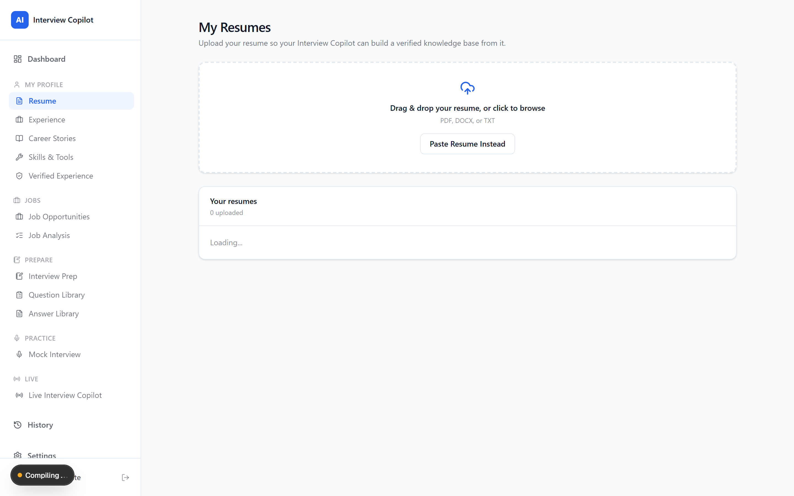
Drag in a PDF, DOCX or TXT, or paste the text. Analysis runs in the background and takes a minute or two, so you can carry on using the app while it works - the card updates itself from Analyzing to Resume Successfully Analyzed. If something goes wrong it tells you exactly what, and offers a retry.
My Profile - Verified Experience
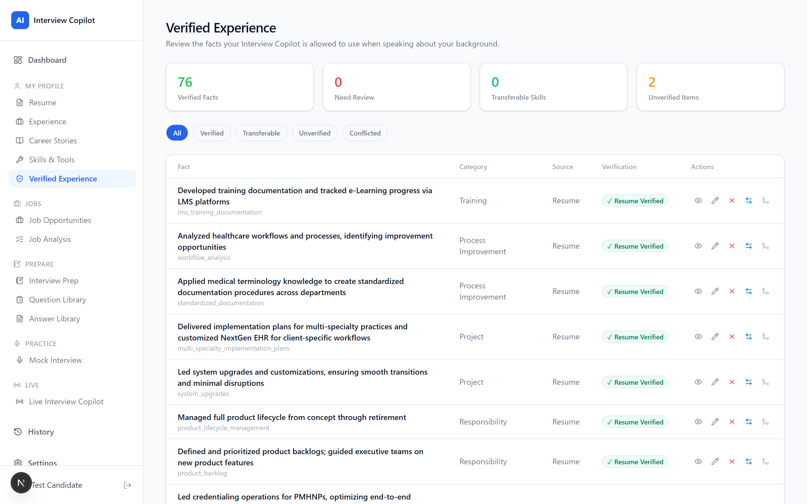
This is the heart of the product. Every fact the Copilot is allowed to say about you lives here, each traced back to where it came from. Green means it came straight from your resume or a story you wrote. Blue means transferable - related experience, not the exact thing asked for. Amber means unverified, and those are deliberately kept out of live answers until you confirm them.
My Profile - Career Stories
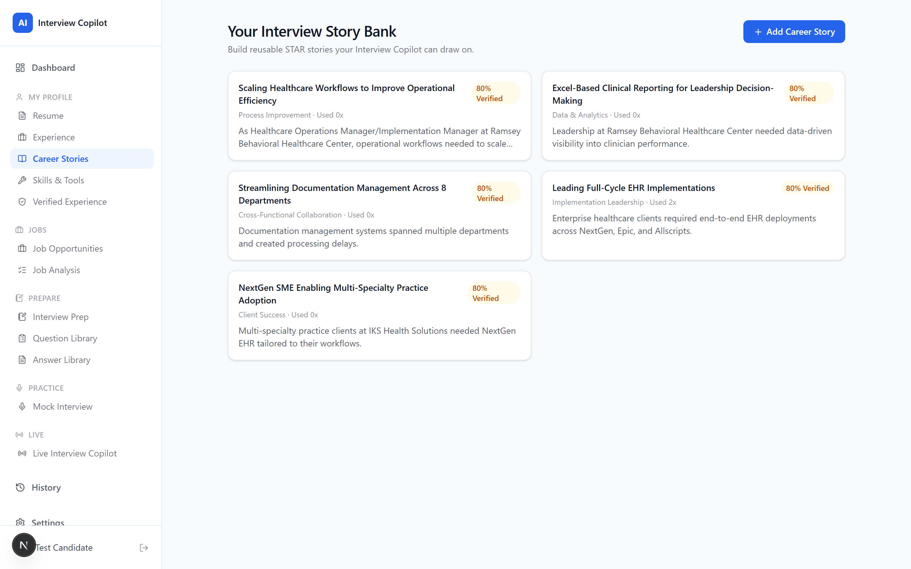
Your STAR stories - situation, task, action, result. The system suggests these from your resume, and you can edit them or write your own. In an interview these are what the Copilot reaches for first, because a story you wrote is stronger evidence than a bullet point.
My Profile - Skills & Tools
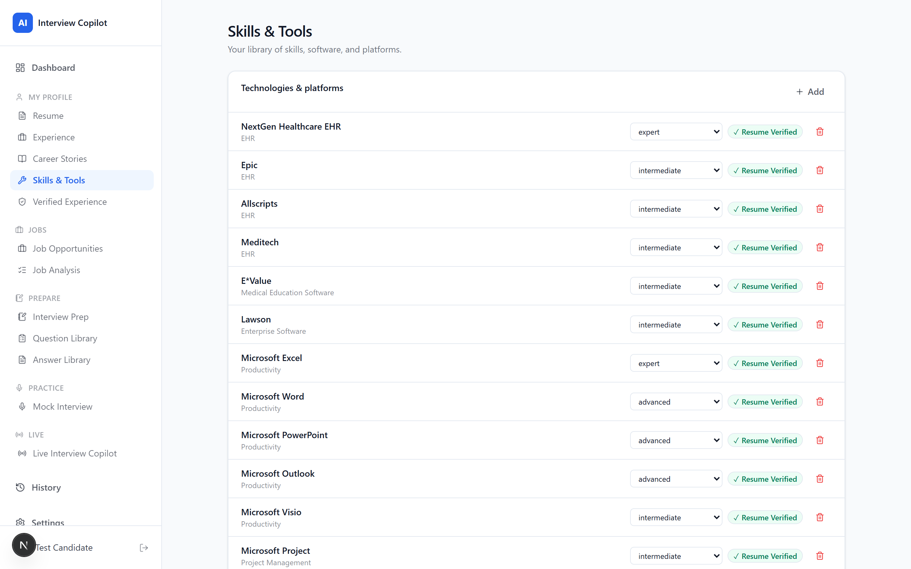
Platforms, systems and skills with a proficiency level and where you used each one. This is what lets the Copilot answer a question about a tool honestly - naming what you have used directly, and what is only comparable.
Jobs - Job Opportunities
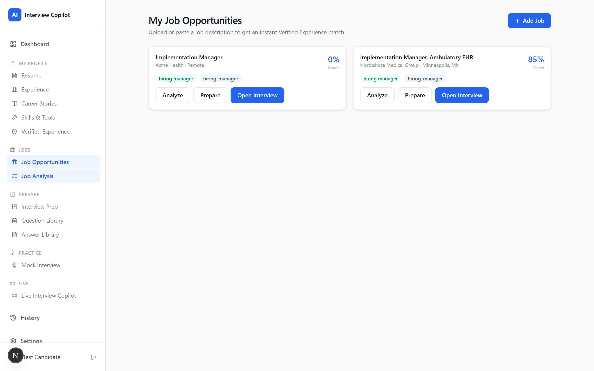
Every role you are pursuing, with its stage and match score. Add a job by pasting the posting; the requirements are extracted automatically and matched against your background.
Jobs - Job Analysis
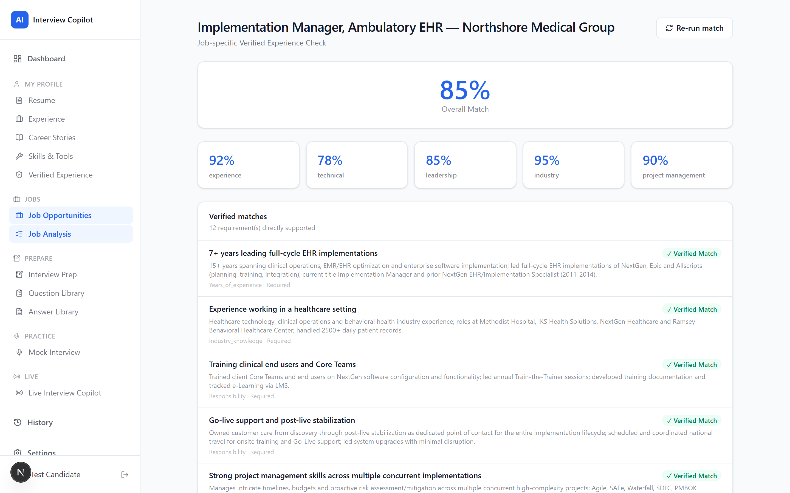
How you actually line up against a posting, requirement by requirement. Each one is sorted into verified matches, transferable matches, things needing your confirmation, and true gaps - with the evidence quoted underneath. This is the honest picture, not a keyword count.
Prepare - Question Library
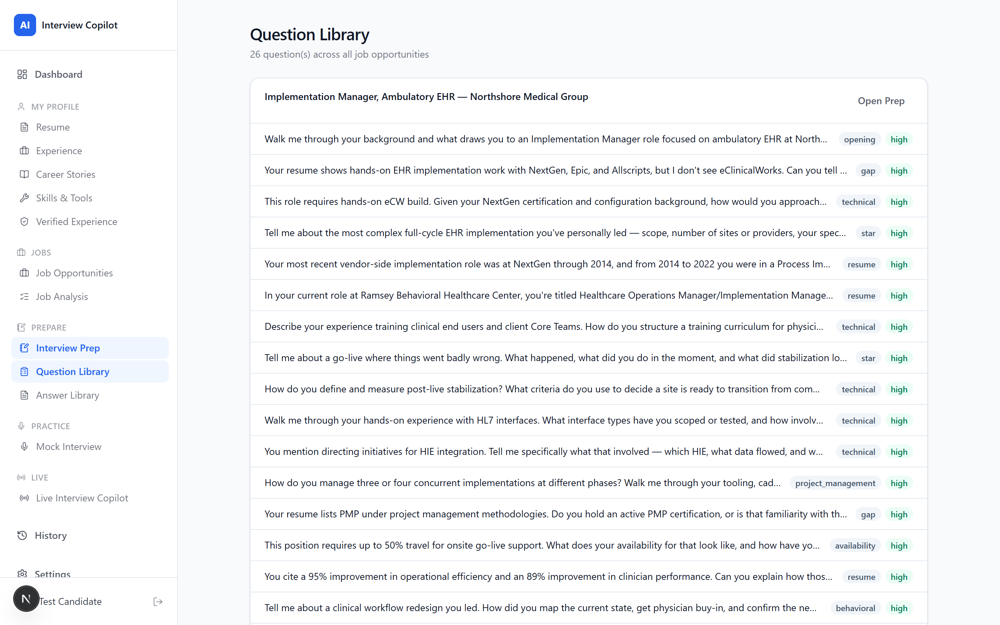
Questions predicted for this specific job and this specific resume, tagged by category, likelihood and difficulty. They include the uncomfortable ones - gaps in your history, claims worth challenging, dates that invite a question.
Prepare - Answer Library
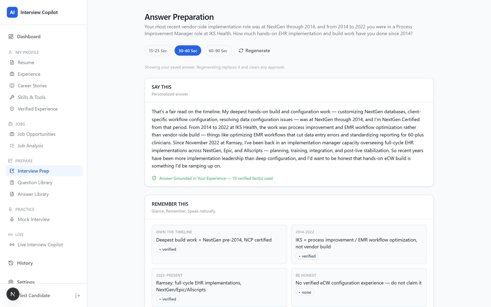
A grounded answer for any question, at three lengths - roughly 15, 30 and 60 seconds. Underneath, the cue cards you would actually glance at, and a note of how many verified facts the answer rests on. Approve one and it is saved.
Practice - Mock Interview
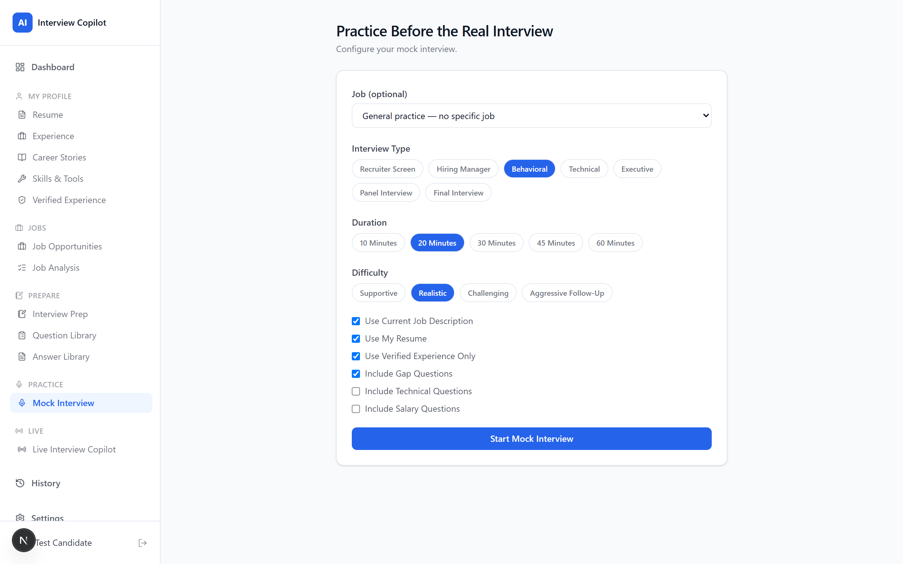
Choose the job, the interview type, the difficulty, and how long you want to go. Leave Use Job Description and Use My Resume on - they are what make the interviewer ask about your actual background rather than generic questions.
Practice - in session
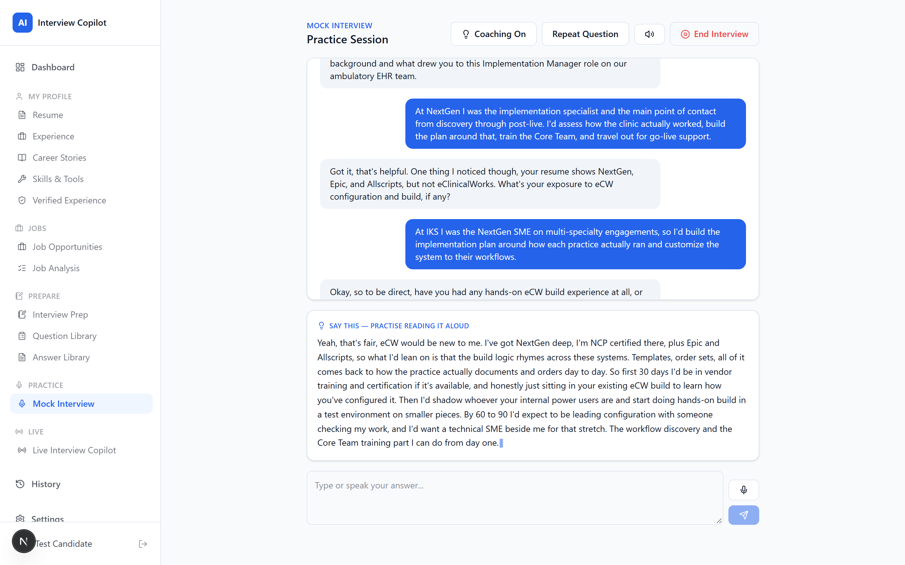
The interviewer asks each question out loud in a female voice, and questions come back in under three seconds so the conversation keeps its rhythm. Coaching On shows a suggested answer under the conversation, grounded in your verified experience, for you to read and practise aloud. Answer by typing or by microphone.
Live - before you start
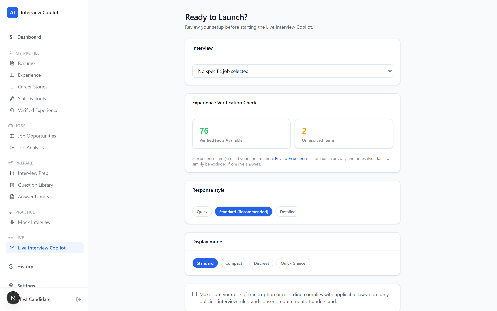
A pre-flight check before a real interview: which job, how many facts are verified, and anything unresolved. Unconfirmed items are simply left out of your answers. Pick a response length and display mode, confirm you understand the recording and consent note, and launch.
Live - during the interview
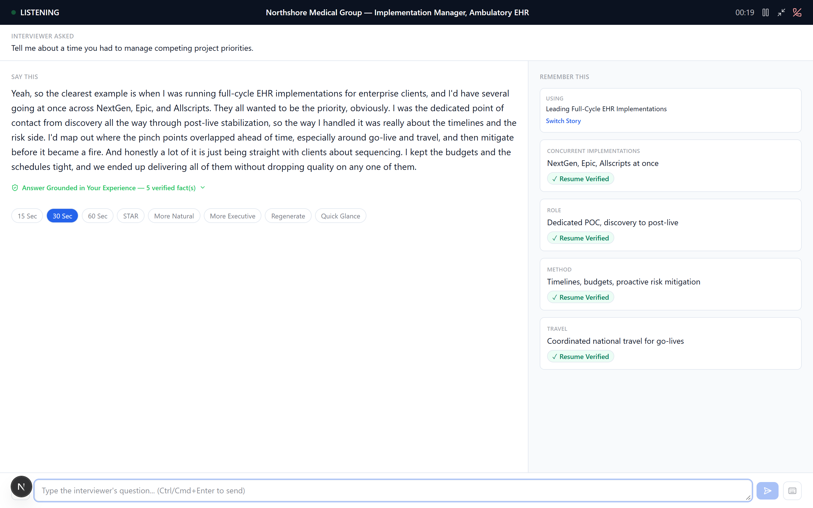
The screen that matters. It listens, detects the question, and starts writing an answer within a few seconds. SAY THIS is what you say. REMEMBER THIS is what you glance at while speaking - the story in play, the key points, each tagged with where it came from. The green line confirms how many verified facts the answer rests on. If it ever strips an unsupported claim, it tells you before you say it.
History - after the interview
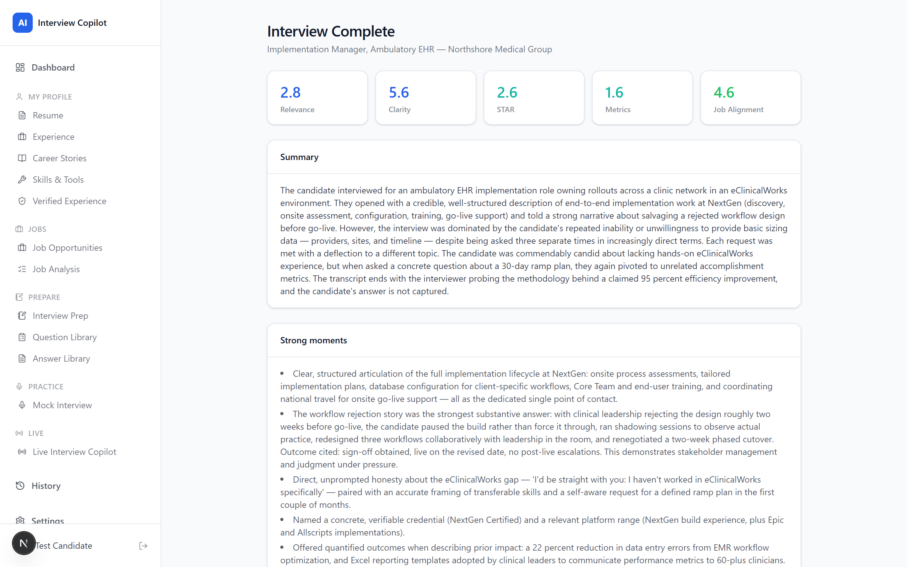
Generated in the background as soon as you end the interview. It covers what went well, what an employer might be concerned about, themes that kept coming up, and anything the employer revealed about the role. A thank-you email is drafted from what was actually discussed. If something was not discussed, it says so rather than inventing it.
History
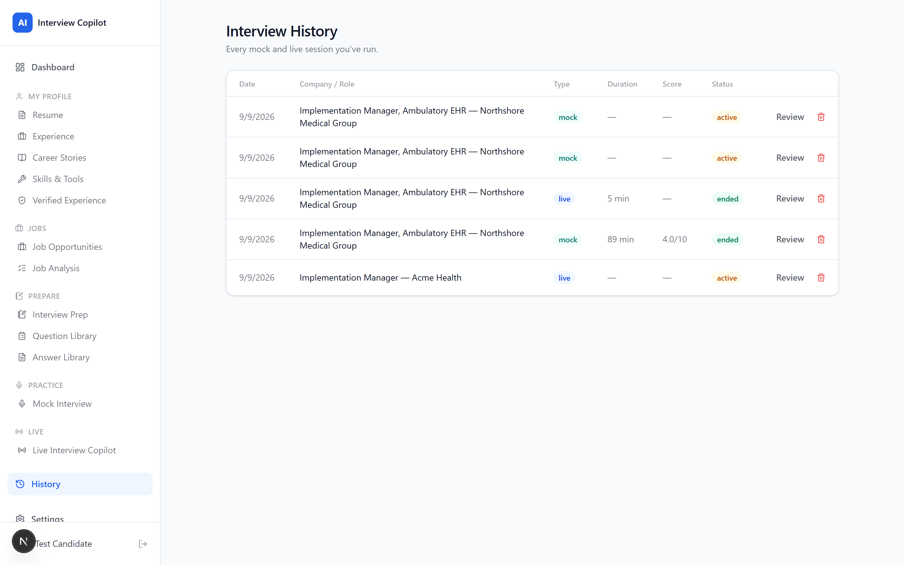
Every practice and live session, with scores and outcomes, so you can see whether you are improving. You can delete any session and its transcript.
These work during a live interview, when your hands should be nowhere near the mouse.
| Key | Does |
|---|---|
| Q | Quick Glance — strips the screen down to cues only |
| S | Rebuild the answer in STAR shape |
| 1 2 3 | Answer length: about 15, 30 or 60 seconds |
| R | Regenerate the answer |
| M | Jump to the box to type a question |
| P | Pause or resume listening |
| H | Hide — shrink to Discreet mode |
| Ctrl + Enter | Send a typed question |
| What you see | What to do |
|---|---|
| Credit balance is too low | Add credits at console.anthropic.com under Plans & Billing. Turn on auto-reload so it cannot happen mid-interview. |
| Nothing happens when you speak | Check the header says LISTENING and that the browser has microphone permission. Type the question as a fallback. |
| Analysis stopped unexpectedly | The server restarted mid-job. Press the retry button on the card. |
| The voice sounds robotic | Windows Settings → Time & Language → Speech → Add voices. Install Aria or Jenny; they are picked up automatically. |
| An answer mentions something you do not recognise | Report it. Narrative grounding is the weakest guarantee in the system, and that is the failure mode to watch for. |